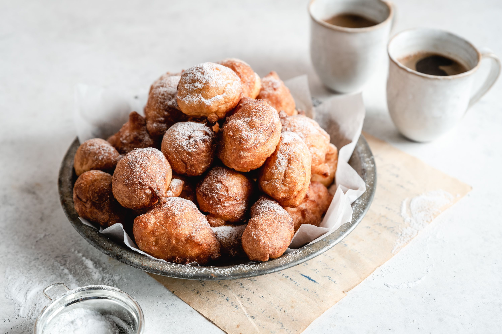

Olie Bollen

Olie Bollen Ingredients
An oliebol is a traditional Belgian and Dutch beignet. They are called oliebollen or smoutballen in the Netherlands, smoutebollen in Flanders and croustillons in Wallonia, Schmalzkugeln in Eastern Belgium German. In France, with croustillons they are also commonly called beignets rapides and croustillons hollandais.
Ingredients
- 2 (.25 ounce) packages active dry yeast
- ½ cup lukewarm water (110 degrees F to 115 degrees F)
- 4 ½ cups all-purpose flour
- ¼ cup white sugar
- 1 teaspoon salt
- 2 eggs, beaten
- 1 ½ cups milk
- 1 ½ cups chopped apple
- 1 cup raisins (Optional)
- 1 quart vegetable oil for frying
- white sugar for decoration
Steps
- Warm oven on lowest possible temperature setting.
- Dissolve the yeast in the warm water in a small mixing bowl. In a large mixing bowl, combine flour, sugar, and salt. Add the eggs, yeast mixture, and milk; beat with an electric mixer until blended.
- Turn off the oven. Cover the prepared dough with a greased piece of plastic wrap, and place the bowl of dough on the lowest rack of the warmed oven. Allow to rest and rise for 1 hour.
- Heat the oil for frying to 350 degrees F (175 degrees C) in a heavy bottomed, deep skillet.
- Mix the apples and raisins into the dough. Then, carefully slide the dough by heaping teaspoons into the preheated oil. Do not crowd the pan. Fry the fritters until they are golden brown, about 2 minutes per side. They should turn over on their own when they are ready to brown on the other side, but keep an eye on them and flip them as necessary. Remove them to a paper towel lined plate and repeat with the remaining dough. Dust with sugar while warm.